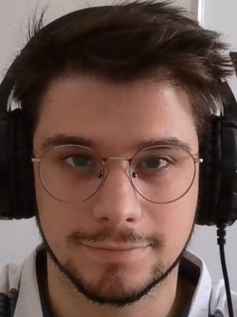

Theodosios Kavalagios

Summary
I am a straight-to-the-point, consise and fluent talker and love the process of trying to
understand and explain something new. I am a problem solver by nature and I love a good challenging
project that takes time, effort, careful planning and optimized implementation to be completed.
My goal is to constantly be enriching my skills and technical know-how in order to be the best
in my line of work. My one weak point is that I have less experience working with others than I
would like to admit and currently work to remedy that.
Education
- High School Diploma (Levadia's 2nd General High School)
- Diploma in Engineering – Applied Mathematics and Physical Sciences (National Technical University of Athens)
- State Certificate of Competency in Italian (Greek Republic, Ministry of Education, Religious Affairs and Sport)
- Certificate of Proficiency in English (University of Michigan)
Work Experience
- Currently employed as a Research & Development Engineer in Terraspatium SA
Digital Skills
- Programming Languages (listed by degree of famiarity from highest to lowest)
- Python
- HTML & CSS
- Javascript
- FORTRAN
- R
- x64 Assembly
- Foreign Languages (listed in order of familiarity from highest to lowest)
- English
- Italian
- Japanese
- German
- French
- Software (listed in order of familiarity from highest to lowest)
- GIMP
- Blender
- DaVinci Resolve
- Microsoft Word/Excel/Powerpoint
- Octave
- Maxima
- Research expertise in Optoelectronics & Nuclear/Elementary Particle Physics
- 3D Modelling & Animation
- Graphics Programming Enthusiast
Seminars and Conferences
- 69th NCSR "Demokritos" Summer School
- 31st Symposium of the Hellenic Nuclear Physics Society
- 1st Panhellenic Bioscience Student's Conference
- Spring School of Gravity and Cosmology
- "Laser, Lumière extrême et ses applications" Lecture